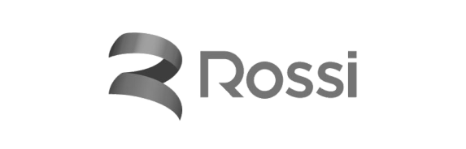
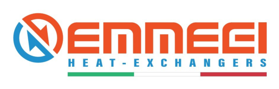
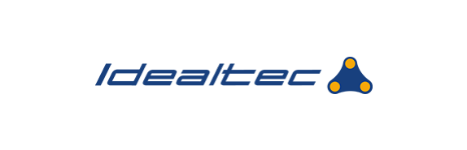

Hardware dedicato in azienda
01
Private AI · Company presentation 2026
La vostra AI privata, dentro la fabbrica
Un hardware dedicato con un modello open source di frontiera, installato nella vostra rete. Sopra, una suite di agenti già pronti per il manifatturiero.
Modello open source in locale
03I dati non escono dalla rete
05Otto agenti già pronti
Costo fisso, non a consumo
Funziona anche senza internet
Il contesto
L'AI serve in produzione, ma i vostri dati non possono uscire
Dati che non si caricano altrove
Disegni, distinte, listini e contratti sono il patrimonio dell'azienda. Mandarli a un servizio esterno è una decisione che nessuno vuole firmare.
Costi a consumo poco prevedibili
Più l'uso cresce, più cresce la bolletta. Chi lavora su archivi grandi finisce per limitare l'AI proprio dove serve di più.
Dipendenza dalla connessione
In stabilimento la linea cade, le policy di rete cambiano, il fornitore cloud modifica modelli e prezzi. Il lavoro si ferma.
Il risultato: progetti AI che restano in prova e non entrano mai nei processi.
La soluzione
Un hardware dedicato in azienda, con l'AI che gira dentro la vostra rete
Una suite già pronta per il manifatturiero
Otto agenti operativi da collegare ai vostri dati e accendere uno alla volta, per reparto.
Un modello open source di frontiera, in locale
Scelto sul vostro caso e messo a punto sui vostri documenti. I pesi restano sulla macchina.
Un'appliance dedicata, installata in azienda
Arriva configurata e si collega alla rete aziendale come qualsiasi altro server.
Tutto dentro il vostro perimetro: nessuna chiamata verso l'esterno richiesta per funzionare.
L'hardware
Una macchina dedicata, installata da noi in azienda
Arriva configurata, con il modello già installato e gli agenti attivi. Si collega alla rete aziendale come qualsiasi altro server.
Installazione2 giornateon-site
UtentiTutta l'aziendasenza contare i token
Appliance aftercore
Configurazione e perimetro
GPUAcceleratori dedicati dimensionati sul numero di utenti e sulla mole di documenti.
DatiArchivio documentale e indici vettoriali su disco locale, cifrati e sotto il vostro backup.
ReteAccesso solo dalla LAN o via VPN. Nessuna chiamata verso l'esterno richiesta per funzionare.
GestioneMonitoraggio, aggiornamenti del modello e degli agenti inclusi nel servizio.
Il modello
Modelli open source di frontiera, eseguiti in locale
Scegliamo il modello aperto più adatto al vostro caso e lo mettiamo a punto sui vostri documenti. Quando ne esce uno migliore, si aggiorna l'appliance: gli agenti restano gli stessi.
- —Manuali, distinte, schede tecniche e capitolati indicizzati in locale.
- —Storico interventi, offerte e ordini come base per le risposte.
- —Il vostro linguaggio: codici, sigle e nomi degli impianti.
Nessun vincolo di fornitore
Il modello resta vostro
Modello attivoopen weights
Licenzauso commerciale
Aggiornamentoincluso, in loco
Esecuzionein rete locale
I pesi del modello restano sulla macchina: se cambiate fornitore o strategia, il sistema continua a funzionare.
I vantaggi
Cosa cambia quando l'AI resta dentro l'azienda
I dati non escono
Documenti, disegni e anagrafiche restano sulla vostra macchina. Nessun invio a terzi, nessun addestramento esterno su di essi.
Costo fisso, non a consumo
Si paga la macchina e il servizio, non le richieste. L'uso può crescere in tutta l'azienda senza contare i token.
Funziona senza internet
L'appliance lavora in rete locale: risposte rapide in stabilimento e nessun fermo quando la linea cade.
Conformità più semplice
Trattamento on-premise, perimetro chiaro e log sotto il vostro controllo: GDPR, NIS2 e AI Act diventano più facili da documentare.
Nessun lock-in
Modelli aperti e dati vostri: si cambia modello quando conviene, senza rifare gli agenti né migrare gli archivi.
Specializzato su di voi
Un modello generico conosce il mondo; il vostro conosce i vostri impianti, i vostri codici e i vostri interventi.
Gli agenti
Otto agenti operativi, collegati allo stesso core
Non si parte da un modello vuoto: la macchina arriva con gli agenti del manifatturiero già costruiti. Stessa appliance, stessi dati, stesso modello; si attivano uno alla volta, per reparto.
Appliance aftercore · un solo core
Otto agenti collegati allo stesso modello e agli stessi documenti, in rete locale.
Un solo core: stesso hardware, stesso modello, stessi documenti indicizzati. Gli agenti condividono ciò che imparano.
01
Preventivazione
Legge capitolati e distinte, calcola i costi da listini e storico, prepara l'offerta da approvare.
02
Assistenza tecnica
Identifica il guasto, consulta manuali e distinte, propone la soluzione già usata su casi simili.
03
Vendite
Risponde alle richieste in arrivo, recupera configurazioni e listini, tiene in piedi i follow-up.
04
Ricambi
Trova il pezzo da descrizione, matricola o foto, con disponibilità e prezzo dal gestionale.
05
Ticketing
Email, WhatsApp e chat diventano ticket classificati per macchina, cliente e urgenza.
06
Acquisti e fornitori
Invia le richieste di quotazione, confronta le risposte e segue i tempi di consegna promessi.
07
Documentale
Manuali, certificazioni, norme e capitolati: risponde citando documento e revisione.
08
Qualità dei dati
Ripulisce codici duplicati e descrizioni incoerenti, completa le distinte rimaste a metà.
Agente preventivazione
Dalla richiesta del cliente all'offerta valorizzata
L'agente legge la richiesta come farebbe un preventivista: ricostruisce la distinta, la valorizza con listini e storico, e prepara il documento.
- —Capitolati, disegni ed email in allegato letti e trasformati in righe di distinta.
- —Prezzi da listini fornitori e da offerte simili già fatte.
- —Il margine viene confrontato con lo storico prima di uscire.
- —L'approvazione finale resta sempre alle vostre persone.
Offerta in preparazione
Linea di taglio · rev. 2
da capitolato_linea_taglio_rev2.pdf · 14 pagine
Telaio saldato TL-220€ 12.400
Gruppo motoriduttore MR-8€ 9.150
Quadro elettrico e cablaggi€ 7.800
Montaggio e collaudo€ 5.600
Totale€ 34.950
Margine 24% · in linea con le ultime 7 offerte simili.
Agente assistenza tecnica
Il know-how dei tecnici senior resta in azienda
Ogni caso chiuso diventa una voce di manuale associata a impianto, sintomo e causa. Il sapere non esce dall'azienda e non se ne va con le persone.
Casi in KB1.240già consultabili
RispostaIn localesenza uscire dalla LAN
Integrazioni
Si collega ai principali ERP che usi già
Gli agenti leggono distinte, listini, giacenze e anagrafiche dal vostro ERP o da un database alimentato dai vostri dati — tutto dentro la rete aziendale.
TeamSystem
Zucchetti
SAP Business One
Dynamics 365 BC
Mago4
Arca Evolution
Passepartout Mexal
Gamma
Sistemi (e/)
Danea Easyfatt
Galileo
Oracle NetSuite
Leggiamo anche cartelle documentali, storico interventi in Excel e dati dal MES.
Non vedi il tuo gestionale? Ci integriamo anche via API, export/import o database dedicato.
Lavoriamo con
Lavoriamo con aziende di tutte le dimensioni



Demo
Vediamo l'appliance al lavoro sui vostri documenti
Mezz'ora, su una parte dei vostri documenti reali. Vi mostriamo l'AI privata in funzione: come indicizza i vostri archivi e come rispondono gli agenti.
Nessun impegno — i documenti della demo restano vostri e l'approvazione resta sempre alle vostre persone.
Richiesta ricevuta
Ti ricontattiamo a breve per fissare la demo. Grazie.